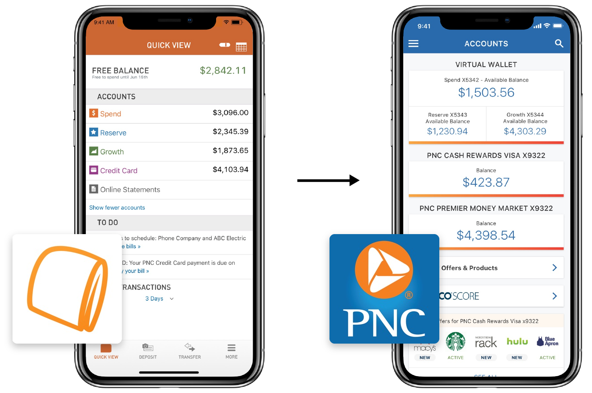
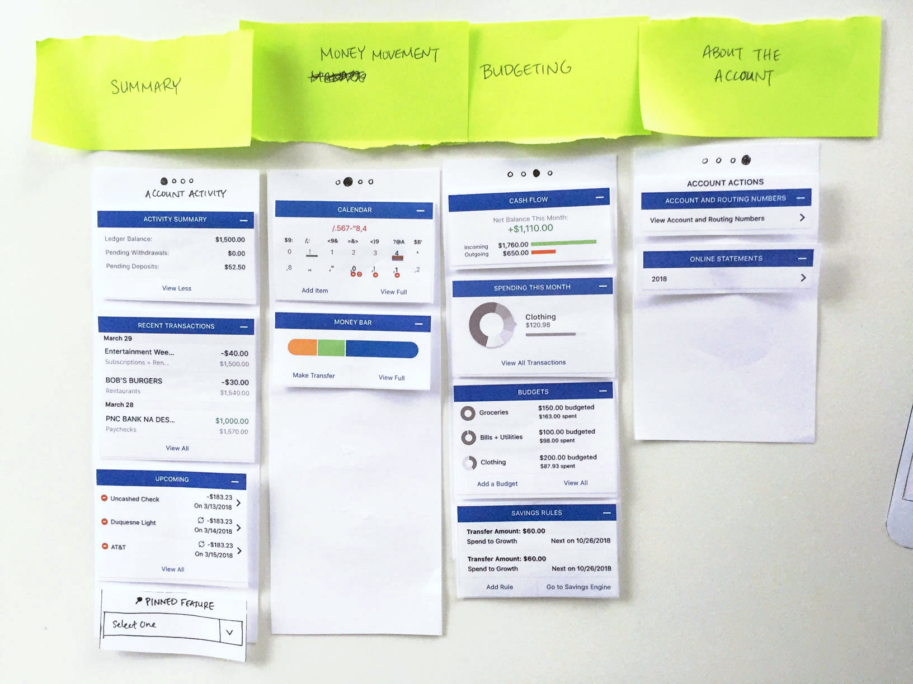
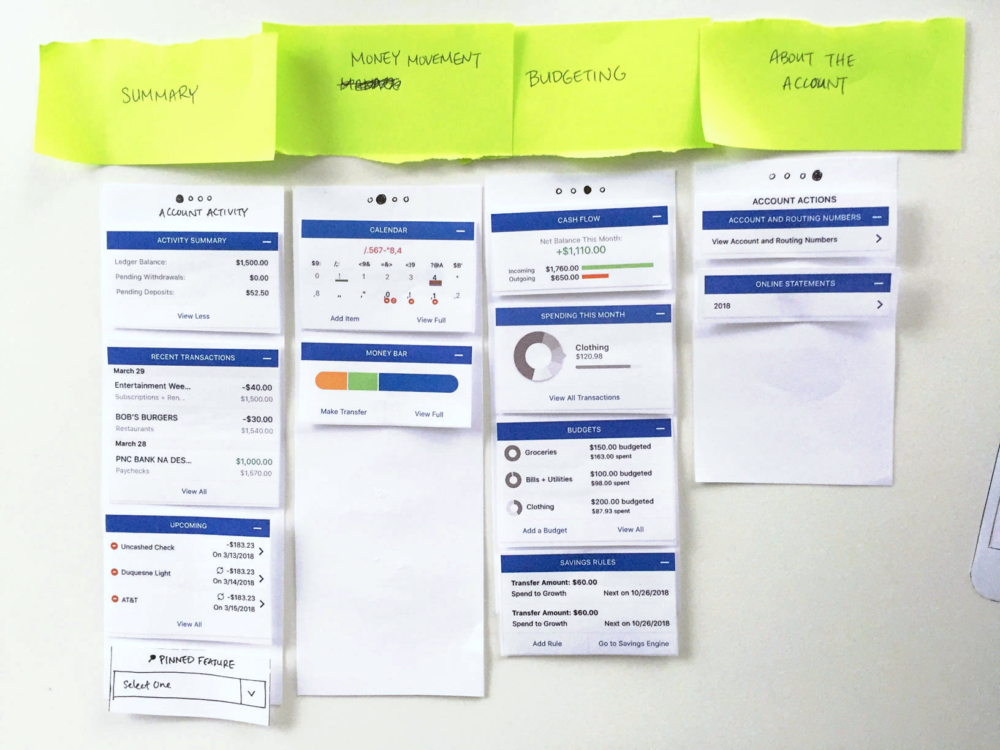
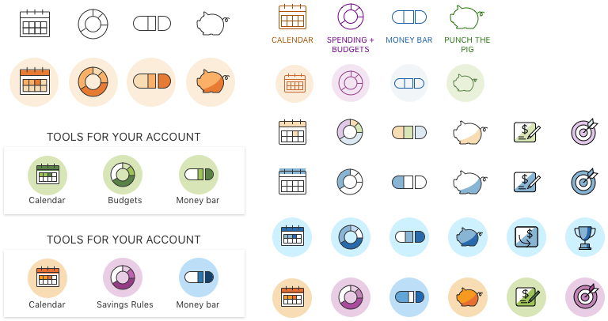

PNC: Account Activity
Challenge
Redesign account pages in PNC’s mobile app to incorporate new data and content.
Outcome
A new layout and interaction with banking tools in account pages, as well as improved visual hierarchy for all account pages.
RoleDesign lead
TeamProduct manager, Developer team
Overview
This project was part of an initiative to introduce banking tools into PNC's main banking app. Before, only PNC's Virtual Wallet app supports these tools in a mobile format, and only for customers with VW accounts. The app also doesn't show users their non-VW bank accounts.
My task was to redesign the main app's pre-existing Account Activity experience. The goal was to help transition existing VW customers into the new app, and to help other PNC customers discover the new tools at their disposal.
Research
Beginner & Advanced Users
I had 2 sets of users: people already familiar with the tools, and people who weren't.
When I talked to both groups to learn either how people were using our tools, or why they don’t want to, I found it was a matter of how actively people wanted to manage their money. But for some, they simply didn't want 2 apps for one bank, which supported the business ask.
If I could see all my PNC accounts in one place, and still have the tools, I’d use them all the time.
Informaton Structure
I asked people how they generally banked and realized that Account Activity was like a dashboard for account information and actions.
From there, I asked 10 users perform one of 3 tasks to learn about the relationships between tools (how they’re used together), between tools and accounts (which tools might support checking vs. savings accounts), and between content in accounts in general.
 

Through these tasks, I was able to identify key features valued by both groups of users:
- Account balance
- Transactions list
- Having 1 & 2 for reference when managing money
Design
Development
With higher-fidelity mockups, I tried different ways of grouping content, displaying them and navigating between them.
Below are some ideas I explored and tested (with help from our research team, testing for task completion, ease of use and appeal).
Exploration: Carousel
Task completion: 66%; Ease: 4.9/7; Desirability: 6.1/7
Pros
- Organized by function/topic
Cons
- Can't compare cards in the same group
- Mixes action and static items
Exploration: Tabbed Pages
Task completion: 80%; Ease: 5.5/7; Desirability: 5.4/7
Pros
- Shorter pages, less scrolling
Cons
- Content hidden and less discoverable on other pages
- Difficult to assign page names
Exploration: Tool Bars
Task completion: 100%; Ease: 6.5/7; Desirability: 6.2/7
Pros
- Gives quick visual snapshot of financial activity
- Smaller widgets/icons are easier to process
Cons
- Less data presented at a time
Everything I need is on one page. I could easily manage the account without leaving this screen.
66% of users preferred the "tool bar" versions, across 15 A/B tests where users completed a set of tasks in one version and then were shown the other options.
Iconography
As I moved forward with the icon tool bar, I further developed the tool icons to make them more recognizable. Adding color (borrowed from VW's brand) were well received by stakeholders and users for adding visual delight in addition to brand familiarity.
Through metrics and qualitative feedback, I learned what worked well and continued to refine them. Some highlights include the enlarged account balance, the tool bar component, and the single page layout.
Final Screens
Using this iterative design cycle, I developed the final screens. I wanted the new designs to help people feel capable & delighted about money management, encouraging them to do more of it.
Below are the final pages for each type of VW account. Each account (checking, checking with interest, high-yield savings, and credit card) features a uniquely tailored tool set.
User Flow
This flow shows the key Account Activity user flow. Below, I provide more detail on how and why each screen was changed.
Account Page
- Clearer visual hierarchy
- Includes new "tool bar" component, icons and interaction
Account Details
- Reduced clutter by hiding less-used information
- Lines added for visual grouping
Transactions
- VW-exclusive “Category” detail
- Full width to increase real estate usage
Transactions Details
- “Edit category” functionality
- Layout that allows for future detail items
Results
- New visual page layout applied to account pages for 8.3 million users
- Tool bar design introduced for 4.8 million Virtual Wallet accounts
- Learning to work with the constraints of pre-existing product & patterns
- Improved ability to prototype with Sketch and InVision Studio
At the time I left it, the project was in an employee pilot release and the team was gathering feedback.
These tools save me a lot of time tracking money, and I use the app a lot more now.